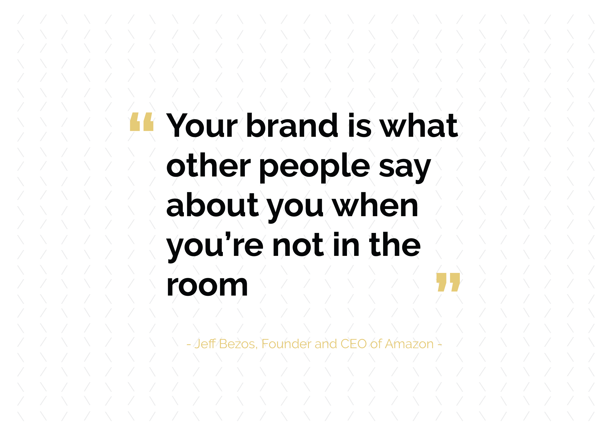

Roen Pulles
Welkom op mijn portfolio.Ik zal mijzelf even voorstellen.
Ik ben Roen Pulles ,21 jaar, 4e jaar student op de HAN Automotive .Ik heb hiervoor op het Titus Brandsma Lyceeum gezeten en heb daar mijn HAVO diploma behaald. Momenteel doe
ik de minor Smart Industry. In het 4e jaar van mijn opleiding is een minor verplicht en heb dus gekozen voor MSI in Nijmegen.Ik woon in een klein stadje genaamd Megen, in Noord-Brabant. Ik werk als hiker bij het bedrijf Easyway en importeer ook zelf
auto's uit Zwitserland.
Wat is smart industry?
Smart Industry, of ook wel Industry 4.0 is de naam voor een trend van automatisering en gegevensuitwisseling dat gebruikt wordt bij industriële fabricagetechnieken. Het bestaat uit autonome cyber-fysieke
productiesystemen, the Internet of things (IoT of IIoT: Industrial IoT), cloud computing en systemen die ons denkproces deels of volledig kunnen overnemen (cognitieve computing). Smart Industry of Industry 4.0 maakt wat men noemt een "smart
factory". Binnen deze slimme fabrieken, worden machines gekoppeld en uitgelezen, zodat er een goed inzicht kan worden verkregen in wat er werkelijk in de fabriek gebeurt en de processen sneller kunnen worden geoptimaliseerd. Dit creëert
nieuwe kansen op het gebied van de waardeketen, doordat doorlooptijden verkort kunnen worden en efficiënter gewerkt kan worden. Men zal proberen te vermijden om informatie over te typen van het ene softwaresysteem naar het andere softwaresysteem.
Ook op het gebied van service ontstaan er systemen die onderhoudswerkzaamheden gaan voorspellen. Bij het invoeren van dergelijke systemen wordt er onderscheid gemaakt in horizontale en verticale integratie. Horizontale integratie betreft
het digitaliseren van orderprocessen, zoals aanvragen, offertes, orders, inzicht in productievoortgang en facturering. Verticale integratie betreft de integratie van informatiestromen van de werkvloer tot aan het directiekantoor, zoals
MES-systemen en ISA-95.
Wat ga je terug vinden op mijn portfolio?
Voor de minor Smart Industry heb je als opdracht om alles wat je hebt gedaan te verwerken in een Portfolio,dit laat je zien in een website over jezelf. Alle projecten,opdrachten en
verslagen zien hierin terug te vinden. Smart Indsutry is verdeeld in vier vakken. Deze vakken zijn Smart:Start,industry,connection en business. Elke vak heeft een eigen rubriek zoals hierboven te zien is.
